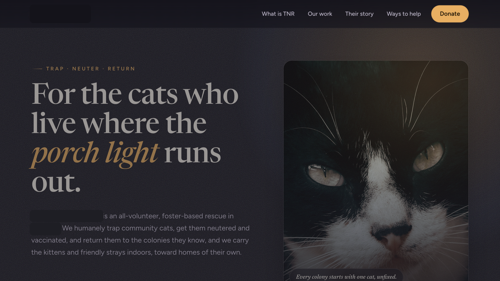

charity website (free build)

Community-cat rescue (trap, neuter, return): explains TNR in plain language with a step-by-step for first-time colony caretakers. Information-first design; the audience needs answers, not animations.
All case studies